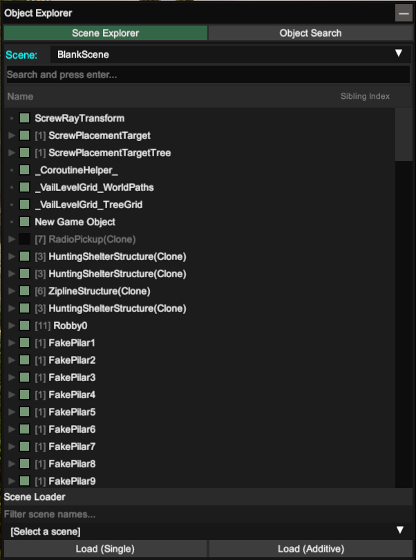
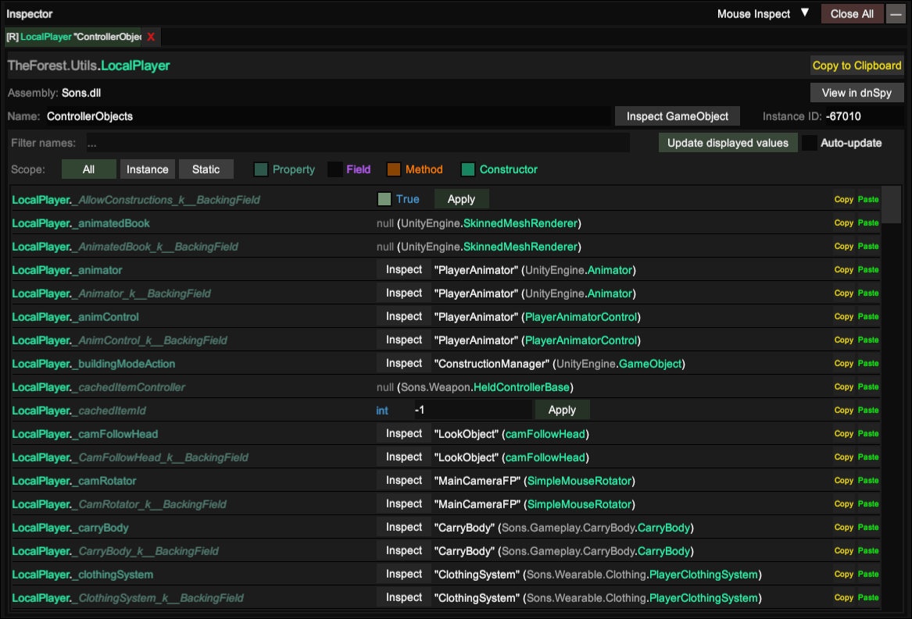

When you gain player control, press F7 to bring up UnityExplorer on screen.  You will see a top bar menu and another window. At the top of the window switch to the Object Search tab,
then in the Class filter we need to type
LocalPlayeras we did in our coded mod to get a reference of it.
 After that, click on one of the results and you will be presented with all the stuff which has to do with it.
After that, click on one of the results and you will be presented with all the stuff which has to do with it.
If you remember, in our code we wrote
LocalPlayer.FpCharacter. This was needed as the
SetWalkSpeedand
SetRunSpeedmethods are tied to the FirstPersonCharacter (FpCharacter in code).
So we basically need to chain things together using dots to reach what we want.  Returning to our newly opened UnityExplorer window with LocalPlayer stuff, we can scroll down to search the
FpCharacter, click Inspect and we will now see all FpCharacter tied stuff in a new window.
 If we scroll down to the
If we scroll down to the Swe can se our
SetWalkSpeedand
SetRunSpeedmethods we used in our code before.
To change the corresponding value, click on Evaluate and enter the values accordingly.
To execute each method, click on the Evaluate button, then close UnityExplorer with F7.
 You can now see the player moves faster, and you can test it with different values to see that it works.
You can now see the player moves faster, and you can test it with different values to see that it works.
Note that these are run-time changes, and won't be saved after restarting the game, unlike a coded mod (but be careful that adding items or spawning something in the world then saving will persist).